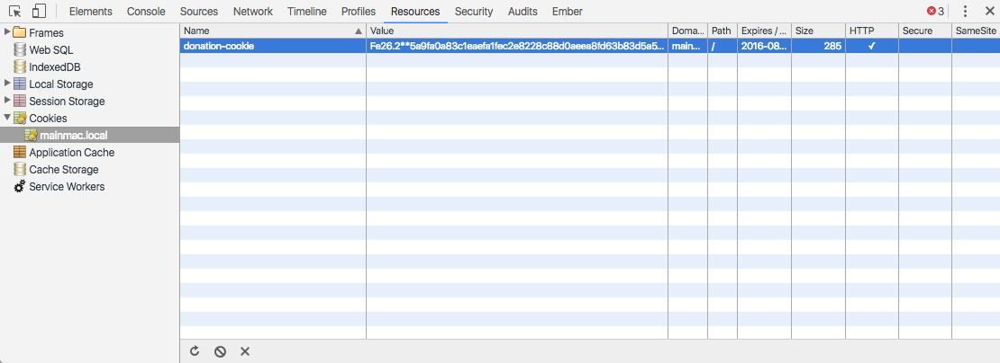
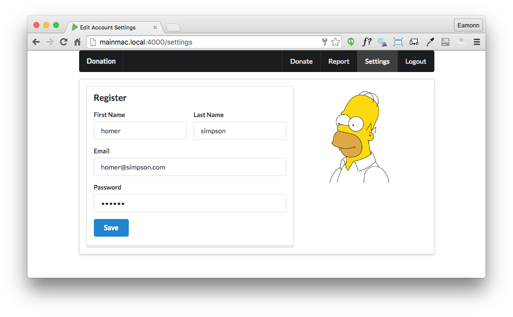

Incorporate sessions tracking into the app, defining a session strategy, protected and unprotected routes and cookie paramaters.
server.bind({
currentUser: {},
users: {},
donations: [],
}); { method: 'POST', path: '/register', config: Accounts.register },exports.register = {
handler: function (request, reply) {
const user = request.payload;
this.users[user.email] = user;
reply.redirect('/login');
},
};
exports.authenticate = {
handler: function (request, reply) {
const user = request.payload;
if ((user.email in this.users) && (user.password === this.users[user.email].password)) {
this.currentUser = this.users[user.email];
reply.redirect('/home');
} else {
reply.redirect('/signup');
}
},
};exports.donate = {
handler: function (request, reply) {
let data = request.payload;
data.donor = this.currentUser;
this.donations.push(data);
reply.redirect('/report');
},
};...
<tr>
<th>Amount</th>
<th>Method donated</th>
<th>Donor</th>
</tr>
...
<tr>
<td> {{amount}} </td>
<td> {{method}} </td>
<td> {{donor.firstName}} {{donor.lastName}} </td>
</tr>
...The naive approach we have taken to tracking users us not really usable. The tracking mechanism is entirely bound within main memory, can can be easily subverted as soon as more than one connection is established to the service (try it!). We need a more robust mechanism - typically called Session Management - to track and follow individual users of our service.
We do this using a conventional cookie based approach. Much of the complexity of this is handled via a plugin, which you can install now:
npm install hapi-auth-cookie -saveOur package.json should now be:
{
"name": "donation-web",
"version": "1.0.0",
"description": "an application to host donations for candidates",
"main": "index.js",
"scripts": {
"test": "echo \"Error: no test specified\" && exit 1"
},
"author": "",
"license": "ISC",
"dependencies": {
"handlebars": "^4.0.5",
"hapi": "^14.1.0",
"hapi-auth-cookie": "^6.1.1",
"inert": "^4.0.1",
"vision": "^4.1.0"
}
}We will need to register the plugin:
server.register([require('inert'), require('vision'), require('hapi-auth-cookie')], err => {... and also initialize it.
server.auth.strategy('standard', 'cookie', {
password: 'secretpasswordnotrevealedtoanyone',
cookie: 'donation-cookie',
isSecure: false,
ttl: 24 * 60 * 60 * 1000,
});Place the above just before the initialization of the routes.
The paramaters set a secure password for the cookie itself, a name for the cookie and a time to live (1 day). Additionally, it is set to work over non-secure connections.
We have not engaged the security strategy yet, so there will be no effect on the app.
If we now set up this as the strategy for all routes:
server.auth.default({
strategy: 'standard',
});Place the above just after the strategy is defined in index.
Restart the application. Now try to visit the app in a browser in the usual way. This time the app will be disabled:
{
statusCode: 401,
error: "Unauthorized",
message: "Missing authentication"
}.. as we have protected all routes with the standard security strategy.
Clearly this is not what we intended. Lets reopen the home page, disabling the strategy for just that route:
exports.main = {
auth: false,
handler: function (request, reply) {
reply.view('main', { title: 'Welcome to Donations' });
},
};Restart the app, and you should be able to visit the home page. All the other routes should still be protected however.
Reopen all of the accounts routes now by adding
auth: false,Now try to log in. You should be able to get passed the signup view and onto login. However, when you log in the app will give you the unauthorised response again:
{
statusCode: 401,
error: "Unauthorized",
message: "Missing authentication"
}We should now remove the currentUser server object:
server.bind({
// currentUser: {},
users: {},
donations: [],
});as we will be using an alternative mechanism to track the user.
Modify the authenticate route to set a session cookie:
...
request.cookieAuth.set({
loggedIn: true,
loggedInUser: user.email,
});
...Do this just after we have verified that the user has valid credentials:
exports.authenticate = {
auth: false,
handler: function (request, reply) {
const user = request.payload;
if ((user.email in this.users) && (user.password === this.users[user.email].password)) {
request.cookieAuth.set({
loggedIn: true,
loggedInUser: user.email,
});
reply.redirect('/home');
} else {
reply.redirect('/signup');
}
},
};In the logout route - we can clear the session:
exports.logout = {
auth: false,
handler: function (request, reply) {
request.cookieAuth.clear();
reply.redirect('/');
},Restart the app - and you should now be able to log in, make donations and view reports.
However, the donor will not be visible on the report - as we have disabled that mechanism (see above).
Before moving on to the next step - see if you can inspect the cookie using chrome developer tools. You might see something like this:

Note that you can delete the cookie here - this may be useful during development, particularly if you are modifying some of the cookie characteristics. The older version of the cookie might interfere with the refreshed one.
Our app now functions (after a fashion). However, we have lost the donor from the donations list. We can fix this now and use the cookie to recover the logged in user details
Here is a revised version of the donate route:
exports.donate = {
handler: function (request, reply) {
let data = request.payload;
var donorEmail = request.auth.credentials.loggedInUser;
data.donor = this.users[donorEmail];
this.donations.push(data);
reply.redirect('/report');
},
};The key changes are here:
var donorEmail = request.auth.credentials.loggedInUser;
data.donor = this.users[donorEmail];We recover the donor email from the cookie - and look up our local database of users to recover the users details. We store that with the donation as before.
Restart the app now, sign up and log in. The donations should be listed with the donors details.
Currently if we are not logged in, and we attempt to visit a guarded route, we get this response:
{
statusCode: 401,
error: "Unauthorized",
message: "Missing authentication"
}This will also be the response if the cookie expires, or is deleted. Try deleting the cookie (using chrome, after you have logged in) and see if this is in fact the case.
A better user experience would be to redirect the user to the login page.
We can do this as an additional parameter when the strategy is being defined:
redirectTo: '/login',Place the above as an additional paramater:
server.auth.strategy('standard', 'cookie', {
password: 'secretpasswordnotrevealedtoanyone',
cookie: 'donation-cookie',
isSecure: false,
ttl: 24 * 60 * 60 * 1000,
redirectTo: '/login',
});Restart the app now, and try to directly visit some of the protected routes:
NB: If you did not log out before you restarted the app, then the above routes will seem to work - even if you did not log in! This is because the session may still be active. Delete the session using chrome web developer tools, restart the app and try the above routes again. This time you should be redirected to the login page.
Unrelated to the sessions support we have been developing so far in this lab - we can do some minor improvements to the template, eliminating some duplication.
Currently our home and report views contain some duplication:
<nav class="ui inverted menu">
<header class="header item"><a href="/"> Donation </a></header>
<div class="right menu">
<a class="active item" href="/home"> Donate</a>
<a class="item" href="/report"> Report</a>
<a class="item" href="/logout"> Logout</a>
</div>
</nav>
<section class="ui raised segment">
{{> donate }}
<div class="ui divider"></div>
<div class="ui teal progress" data-percent="${progress}" id="mainprogress">
<div class="bar"></div>
</div>
</section><nav class="ui inverted menu">
<header class="header item"> <a href="/"> Donation </a> </header>
<div class="right menu">
<a class="item" href="/home"> Donate</a>
<a class="active item" href="/report"> Report</a>
<a class="item" href="/logout"> Logout</a>
</div>
</nav>
{{> donationlist }}The duplicated element is the menu:
<nav class="ui inverted menu">
<header class="header item"><a href="/"> Donation </a></header>
<div class="right menu">
<a class="active item" href="/home"> Donate</a>
<a class="item" href="/report"> Report</a>
<a class="item" href="/logout"> Logout</a>
</div>
</nav>The two versions are not quite the same, however - as the active item is different for each view. The active item is the one highlighted in the menu bar to indicate to the user which page they are currently on.
To eliminate this duplication, we need to do the following:
Here is a new partial - to be included in the partials folder:
<nav class="ui inverted menu">
<header class="header item"><a href="/"> Donation </a></header>
<div class="right menu">
<a id="home" class= "item" href="/home"> Donate</a>
<a id="report" class= "item" href="/report"> Report</a>
<a id="logout" class= "item" href="/logout"> Logout</a>
</div>
</nav>
<script>
$("#{{_id}}").addClass("active item");
</script>In the above, we have included ids for each menuitem, and appended a JQuery script to set the active class for the menu item with the id _id.
Now, in each of our views we can just include this partial - with the appropriate parameter:
{{> mainmenu _id="home" }}
<section class="ui raised segment">
{{> donate }}
<div class="ui divider"></div>
<div class="ui teal progress" data-percent="${progress}" id="mainprogress">
<div class="bar"></div>
</div>
</section>{{> mainmenu _id="report"}}
{{> donationlist }}Try this now - and verify that the active item works as expected.
Archive of the project so far:
Settings view - available after a user has successfully logged in:
It is to present the details of the current user + a Save button, which will update and details modified in the current form.
You will need two new routes to support rendering and submitting the form:
{ method: 'GET', path: '/settings', config: Accounts.viewSettings },
{ method: 'POST', path: '/settings', config: Accounts.updateSettings },You will need to extend mainmenu.hbs to include a new menu item:
<a id="settings" class= "item" href="/settings"> Settings</a>...and this is the new view to display a users details:
{{> mainmenu _id="settings" }}
<section class="ui raised segment">
<div class="ui grid">
<div class="ui ten wide column">
<div class="ui stacked fluid form segment">
<form action="/settings" method="POST">
<h3 class="ui header">Register</h3>
<div class="two fields">
<div class="field">
<label>First Name</label>
<input value="{{user.firstName}}" type="text" name="firstName">
</div>
<div class="field">
<label>Last Name</label>
<input value="{{user.lastName}}" type="text" name="lastName">
</div>
</div>
<div class="field">
<label>Email</label>
<input value="{{user.email}}" type="text" name="email">
</div>
<div class="field">
<label>Password</label>
<input value="{{user.password}}" type="password" name="password">
</div>
<button class="ui blue submit button">Save</button>
</form>
</div>
</div>
<aside class="ui five wide column">
<img src="images/homer3.png" class="ui medium image">
</aside>
</div>
</section>Your task is to now implement two new protected route handlers in accounts.js:
exports.viewSettings = {
// TODO
};
exports.updateSettings = {
// TODO
};